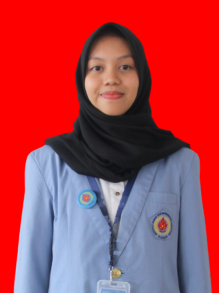
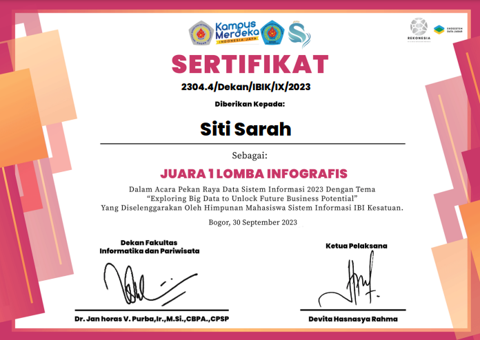

Selamat Datang !
Halo, ini halaman portfolio sederhana yang telah saya buat
Profil

Nama : Siti Sarah
Umur : 19 Tahun
Status : Mahasiswa
Tentang
Mahasiswa Teknologi Informasi di Institut Bisnis dan Informatika Kesatuan Bogor dengan pengalaman pada bidang
jaringan komputer, pemrograman dan desain grafis. Selain itu, memiliki kemampuan interpersonal yang baik seperti
komunikasi
dan kerja sama, yang telah dikembangkan melalui Organisasi Himpunan Mahasiswa. Saat ini memiliki keinginan
untuk mengembangkan kemampuan dilingkup profesional.
Riwayat Pendidikan
SMK Negeri 4 Kota Bogor (2019 - 2022)
- Teknik Komputer dan Jaringan
Institut Bisnis dan Informatika Kesatuan Bogor (2022 - Sekarang)
Pengalaman Kerja
Magang | Dinas Komunikasi dan Informasi Kabupaten Bogor
- Membuat desain icon dan logo untuk aplikasi.
- Melakukan monitoring sosial media terkait berita-berita yang banyak diperbincangkan.
- Bertanggung jawab memeriksa surat masuk dan surat keluar dalam bentuk digital.
- Mengelola arsip dengan sistematis untuk memudahkan
akses dan pengelolaan dokumen.
Pengalaman Organisasi
Himpunan Mahasiswa Teknologi Informasi
Bendahara Bidang
- Mengorganisir dan mengkoordinir keuangan organisasi.
- Mengelola dan merencanakan keuangan organisasi.
- Mengkoordinasikan keuangan di setiap kegiatan yang diselenggarakan oleh biro.
- Melakukan pencatatan dan pengeluaran dana organisasi secara berkala.
Bendahara Umum
- Mengelola dan merencanakan keuangan organisasi.
- Mengkoordinasikan terkait pencarian dana dan keuangan
- Melakukan pencatatan dan pengeluaran dana organisasi secara berkala.
- Mengkoordinasikan keuangan di setiap kegiatan yang diselenggarakan oleh biro.
- Membuat laporan keuangan yang efektif, efisien, dan sistematis berbasis digital.
- Membuat laporan pertanggungjawaban keuangan organisasi.
Penghargaan
Juara 1 Lomba Infografis
Tema : Exploring Big Data to Unlock Future Business Potential

Kontak
Email : stsarah253@gmail.com
Telepon : 0895613167503